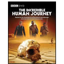
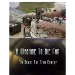
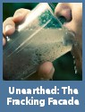
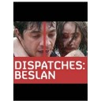

FEATURED DOCUMENTARIES

Dr Alice Roberts travels the globe to discover the incredible story of how humans left Africa to colonize the world. How did we get here? Following a trail of clues from the latest scientific research, Dr Alice Roberts re-traces the greatest ever journey taken by our...
★ 7.96
The year is early 1998, at the height of dot-com era, and a small team of Netscape code writers frantically works to reconstruct the company's Internet browser. In doing so they will rewrite the rules of software development by giving away the...
★ 8.71

Machine to Die For is about the search for perpetual motion and free energy. Conventional science claims this is impossible, yet generations of inventors have been mesmerized by the promise of an engine that powers itself. The world’s reliance on diminishing fossil...
★ 5.92

A video exposing a flawed claim often abused in the sales pitch for promoting shale gas development across the world: "With a history of 60 years, after nearly a million wells drilled, there are no documented cases that hydraulic fracturing (fracking) has...
★ 8.09
INCENTIVE
Documentary Film is a broad category of visual expression that is based on the attempt,
in one fashion or another, to document reality. Knowledge comes in different ways through our five senses. Hearing,
watching, touching, smelling and tasting are the only doorways to the outer world. The wise men say that if something
is not truly experienced with all our five senses, the experience will be partial, not total. Therefore in a way almost
all our gained knowledge through life is partial. And maybe they are right.
If we follow that analogy, gaining knowledge through several senses simultaneously is better than through just one. So,
educating through watching educational videos, in this case documentaries, is really a total
different experience than educating only on books. Don't get me wrong, I'm not trying to undermine the books in any way.
Having said that, lets go and check out some great documentaries right here, right now. You can
browse all documentaries, check out the complete
documentary list or top 100 docs.
Also you can always browse documentaries by categories from the sidebar if you feel like.
FEATURED DOCUMENTARIES
Slavery by Consent succinctly outlines the deception used to enslave humanity by the global criminal class. It is a powerful statement documenting the crimes of the ruling classes. This documentary highlights the nature and history of our enslavement, the absurdity of an...
★ 7.65
What impact the super rich are having in China and what is their prominence and ostentation saying about the Communist Party's complicated attitude to capitalism? Young entrepreneurs are the reflection of Chinese society today. Only two things count: money and success. You...
★ 8.38

The school siege at Beslan was the bloodiest act of terrorism ever to take place on Russian soil. Yet beyond this horrible truth remain many unanswered questions. There is no agreement on who the terrorists were. How many they numbered? Where they came from? How they...
★ 8.33
Entrepreneur Mark Cuban never calls timeout. He says, in football you play 60 minutes, in basketball 48 minutes, but in business it's 24/7/365 and the whole world is trying to kick your ass. Keeping in mind that motto he parlayed his passion...
★ 6.69
ESSENCE
We always have to keep in mind that a Documentary, after all, can tell lies and it can tell lies
because it lays claim to a form of veracity which fiction doesn’t. Some of the documentaries are made just to discredit
some particular person, party, organization, system etc, but most of them here on TDF are non biased, without prejudice and worth watching.
Overall at Top Documentary Films you can find thousands of stunning, eye-opening and interesting documentaries.
Choose one that suits your interest through navigation system of TDF, watch it, and tell us how it was through comments. Go through this
great collection of documentary movies, watch your favorite documentaries, share your thoughts and enjoy TDF.